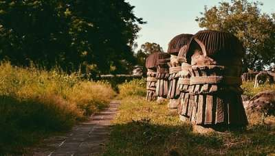

CHUMUKEDIMA
Chümoukedima formally spelled Chumukedima, is a municipality in the Chümoukedima District of the Indian state of Nagaland. It is the third-largest urban agglomeration in Nagaland after Dimapur and Kohima.
DZOKO VALLEY
The Dzüko Valley is a valley located at the borders of the states of Nagaland and Manipur in Northeast India. This valley is well known for its natural environment, seasonal flowers and flora & fauna. It is situated at an altitude of 2452 m above sea level.
JAFKU PEAK
At an altitude of 3048 metres and at only 15 km south of Kohima, is the second highest peak of Nagaland Japfü which offers a tough yet scenic climb for the more adventurous. It also has the tallest rhododendron tree in the world (over 109 ft) as recorded by the Guinness Book of Records.
KACHARI RUINS
Kachari Ruins or The Dimasa Kachari Ruins is located in the town of Dimapur in Nagaland. The ruins are a series of mushroom domed pillars that were created by the Dimasa Kachari Kingdoms that ruled before the Ahom invasion during the 13th century.
KHONOMA GREEN VILLAGE
Khonoma is an Angami Naga village located about 20 km west from the state capital, Kohima. The village is referred to as Khwüno-ra (named after the Angami term for a local plant, Glouthera fragrantisima). ...
KOHIMA
Kohima, is the capital city of India's north eastern state of Nagaland. With a resident population of almost 100,000, it is the second largest city in the state.
MOKOKCHUNG

Mokokchung is a municipality in the Mokokchung District of Nagaland, India. It serves as the district headquarters as well as the main urban hub of Mokokchung District. Mokokchung is the cultural nerve centre of the Ao people and is economically and politically the most important urban centre in northern Nagaland.